%load_ext autoreload
%autoreload 2Training Kalman Filter for Results - 14 Feb
from meteo_imp.kalman.fastai import *
from meteo_imp.kalman.filter import *
from meteo_imp.utils import *
from meteo_imp.data import *
from meteo_imp.gaussian import *
from fastai.tabular.learner import *
from fastai.learner import *
from fastai.callback.all import *
from fastcore.foundation import L
from fastcore.foundation import patch
from pathlib import Path, PosixPath
from meteo_imp.kalman.fastai import show_results
import pandas as pd
import numpy as np
import torch
import random
from pyprojroot import here
from sklearn.decomposition import PCA
from matplotlib import pyplot as plt
from IPython.display import Image, HTML
from tqdm.auto import tqdmfrom fastcore.basics import *show_metrics = Falsereset_seed()hai = pd.read_parquet(hai_big_path)
hai_era = pd.read_parquet(hai_era_big_path)base = here("analysis/results/trained_14feb")base.mkdir(exist_ok=True)@patch
def add_end(self: PosixPath, end): return self.parent / (self.name + end)def train_or_load(model, dls, lr, n, path, keep=True):
save_models = SaveModelsBatch(times_epoch=5)
csv_logger = CSVLogger(path.add_end("log.csv"))
learn = Learner(dls, model, KalmanLoss(only_gap=True), cbs = [Float64Callback, save_models, csv_logger], metrics=rmse_gap)
items = random.choices(dls.valid.items, k=4)
if path.add_end(".pickle").exists() and keep:
learn.model = torch.load(path.add_end(".pickle"))
display(csv_logger.read_log())
plot = Image(filename=path.add_end("_loss_plot.png"))
display(plot)
else:
learn.fit(lr, n)
torch.save(learn.model, path.add_end(".pickle"))
learn.recorder.plot_loss()
plt.savefig(path.add_end("_loss_plot.png"))
return learn, items def metric_valid(learn, dls=None):
nrmse = []
losses = []
dls = ifnone(dls, learn.dls.valid)
for input, target in tqdm(dls, leave=False):
pred = learn.model(input)
nrmse.append(learn.metrics[0](pred, target))
losses.append(learn.loss_func(pred, target).item())
metric = pd.DataFrame({'loss': losses, 'rmse': nrmse})
return metric.agg(['mean', 'std'])hai.columnsIndex(['TA', 'SW_IN', 'LW_IN', 'VPD', 'WS', 'PA', 'P', 'SWC', 'TS'], dtype='object')Generic model | gap len 3-336 | gap 1 random
dls_A1v = imp_dataloader(
df = hai,
control = hai_era,
var_sel = gen_var_sel(list(hai.columns), n_var=1),
block_len=100+336,
gap_len=gen_gap_len(12, 336),
bs=20,
control_lags=[1],
shifts=gen_shifts(50),
n_rep=5).cpu()len(hai)227952len(dls_A1v.train)*20, len(dls_A1v.valid)*20(2080, 520)model_A1v = KalmanFilterSR.init_local_slope_pca(
n_dim_obs= len(hai.columns),
n_dim_state=len(hai.columns),
n_dim_contr = len(hai_era.columns),
df_pca = hai,
pred_only_gap=True)model_A1v.B.shapetorch.Size([1, 18, 14])learn_A1v, items_A1v = train_or_load(model_A1v, dls_A1v, 3, 1e-3, base / "1_gap_varying_12-336_v1")| epoch | train_loss | valid_loss | rmse_gap | time | |
|---|---|---|---|---|---|
| 0 | 0 | 218.223338 | 180.709305 | 0.644005 | 44:15 |
| 1 | 1 | 151.410605 | 141.214027 | 0.522214 | 44:12 |
| 2 | 2 | 131.718513 | 125.997503 | 0.487121 | 39:18 |
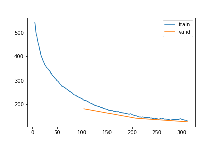
learn_A1v, items_A1v = train_or_load(learn_A1v.model, dls_A1v, 3, 1e-5, base / "1_gap_varying_12-336_v2")| epoch | train_loss | valid_loss | rmse_gap | time | |
|---|---|---|---|---|---|
| 0 | 0 | 118.741593 | 123.699397 | 0.478724 | 41:16 |
| 1 | 1 | 113.616615 | 123.144674 | 0.477401 | 45:19 |
| 2 | 2 | 116.975438 | 122.501000 | 0.476022 | 43:10 |
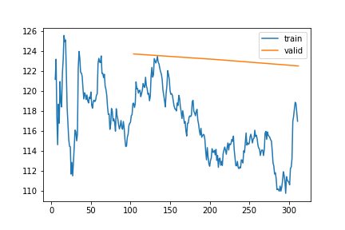
learn_A1v, items_A1v = train_or_load(learn_A1v.model, dls_A1v, 1, 1e-3, base / "1_gap_varying_12-336_v3")| epoch | train_loss | valid_loss | rmse_gap | time | |
|---|---|---|---|---|---|
| 0 | 0 | 117.073355 | 113.886802 | 0.448564 | 46:56 |

show_results(learn_A1v)[MeteoImpItem(i=476, shift=56, var_sel=['WS'], gap_len=67), MeteoImpItem(i=425, shift=-2, var_sel=['VPD'], gap_len=251), MeteoImpItem(i=504, shift=27, var_sel=['TA'], gap_len=81)]metric_valid(learn_A1v)| loss | rmse | |
|---|---|---|
| mean | 113.886802 | 0.448564 |
| std | 34.077131 | 0.089174 |
1 var gap - varying 336 - No Control
model_A1v_nc = KalmanFilterSR.init_local_slope_pca(
n_dim_obs= len(hai.columns),
n_dim_state=len(hai.columns),
n_dim_contr = len(hai_era.columns),
df_pca=hai,
pred_only_gap=True,
use_control=False
)learn_A1v_nc, items_A1v_nc = train_or_load(model_A1v_nc, dls_A1v, 3, 1e-3, base / "1_gap_varying_336_no_control_v1")| epoch | train_loss | valid_loss | rmse_gap | time | |
|---|---|---|---|---|---|
| 0 | 0 | 231.587168 | 190.550897 | 0.671689 | 39:28 |
| 1 | 1 | 190.622703 | 177.561463 | 0.611599 | 39:41 |
| 2 | 2 | 174.056532 | 164.573917 | 0.574693 | 39:39 |
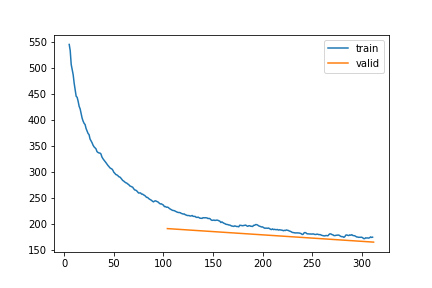
All variables - 30 all
dls_Aa = imp_dataloader(
df = hai,
control = hai_era,
var_sel = list(hai.columns),
block_len=120,
gap_len=30,
bs=20,
control_lags=[1],
shifts=gen_shifts(50),
n_rep=5
).cpu()dls_Aa = imp_dataloader(hai, hai_era, var_sel = list(hai.columns), block_len=120, gap_len=30, bs=20, control_lags=[1], n_rep=10).cpu()model_Aa = learn_A1v.model.copy()if show_metrics: metric_valid(learn_A1v, dls=dls_Aa.valid)learn_Aa, items_Aa = train_or_load(model_Aa, dls_Aa, 3, 3e-4, base / "All_gap_all_30_v1")| epoch | train_loss | valid_loss | rmse_gap | time | |
|---|---|---|---|---|---|
| 0 | 0 | 70.709546 | 74.130236 | 0.411005 | 25:47 |
| 1 | 1 | -2.735788 | 7.333283 | 0.381263 | 28:48 |
| 2 | 2 | -16.577652 | -9.151317 | 0.374610 | 32:13 |

Fine tuning
Fine tune Variable | gap only for one variable | gap len 3-336
fine tune the model to only one variable
from fastcore.basics import *from IPython.display import HTMLspec_models = {}
spec_dls = {}
spec_learn = {}
spec_items = {}
for var in tqdm(list(hai.columns)):
display(HTML(f"<h4> {var} | Gap len 12-336 </h4>"))
spec_dls[var] = imp_dataloader(hai, hai_era, var_sel = var, block_len=100+336, gap_len=gen_gap_len(12, 336), bs=20, control_lags=[1], n_rep=3, shifts=gen_shifts(50)).cpu()
spec_models[var] = learn_A1v.model.copy()
if show_metrics:
display(HTML("Metrics generic model"))
display(metric_valid(learn_A1v, dls=spec_dls[var].valid))
spec_learn[var], spec_items[var] = train_or_load(spec_models[var], spec_dls[var], 3, 1e-3, base / f"{var}_specialized_gap_12-336_v1")
plt.show()TA | Gap len 12-336
| epoch | train_loss | valid_loss | rmse_gap | time | |
|---|---|---|---|---|---|
| 0 | 0 | -31.277383 | -59.727349 | 0.155292 | 23:16 |
| 1 | 1 | -57.410593 | -83.423924 | 0.135217 | 24:38 |
| 2 | 2 | -69.265146 | -81.197435 | 0.137000 | 21:50 |

SW_IN | Gap len 12-336
| epoch | train_loss | valid_loss | rmse_gap | time | |
|---|---|---|---|---|---|
| 0 | 0 | 72.838760 | 63.622077 | 0.317182 | 22:33 |
| 1 | 1 | 60.514370 | 53.416147 | 0.296670 | 22:32 |
| 2 | 2 | 55.572469 | 48.728888 | 0.287208 | 25:43 |
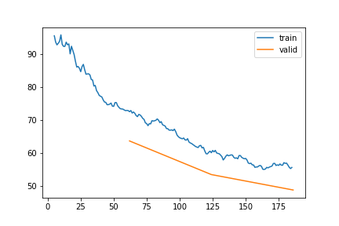
LW_IN | Gap len 12-336
| epoch | train_loss | valid_loss | rmse_gap | time | |
|---|---|---|---|---|---|
| 0 | 0 | 110.011858 | 112.541507 | 0.435194 | 24:28 |
| 1 | 1 | 105.027452 | 106.923631 | 0.417517 | 24:23 |
| 2 | 2 | 102.755247 | 106.489712 | 0.415183 | 24:53 |

VPD | Gap len 12-336
| epoch | train_loss | valid_loss | rmse_gap | time | |
|---|---|---|---|---|---|
| 0 | 0 | 67.771759 | 71.121287 | 0.306581 | 25:12 |
| 1 | 1 | 58.432390 | 49.351550 | 0.275882 | 23:40 |
| 2 | 2 | 49.884968 | 41.432351 | 0.264706 | 25:51 |
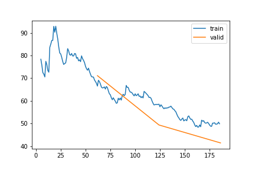
WS | Gap len 12-336
| epoch | train_loss | valid_loss | rmse_gap | time | |
|---|---|---|---|---|---|
| 0 | 0 | 169.196013 | 241.890813 | 0.734134 | 24:18 |
| 1 | 1 | 165.496950 | 235.745148 | 0.711773 | 23:20 |
| 2 | 2 | 161.570979 | 223.982837 | 0.696192 | 22:10 |
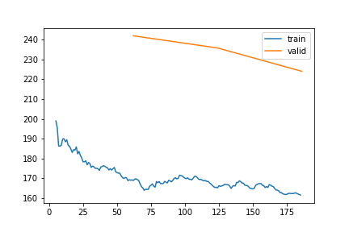
PA | Gap len 12-336
| epoch | train_loss | valid_loss | rmse_gap | time | |
|---|---|---|---|---|---|
| 0 | 0 | -73.724512 | -103.872036 | 0.124549 | 27:03 |
| 1 | 1 | -111.420458 | -130.842109 | 0.104550 | 30:01 |
| 2 | 2 | -133.129972 | -140.989809 | 0.100966 | 24:07 |
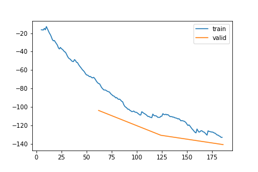
P | Gap len 12-336
| epoch | train_loss | valid_loss | rmse_gap | time | |
|---|---|---|---|---|---|
| 0 | 0 | 259.814830 | 216.069186 | 0.602446 | 24:34 |
| 1 | 1 | 248.654373 | 209.606269 | 0.607980 | 23:06 |
| 2 | 2 | 242.001831 | 206.787110 | 0.605378 | 25:11 |

SWC | Gap len 12-336
| epoch | train_loss | valid_loss | rmse_gap | time | |
|---|---|---|---|---|---|
| 0 | 0 | 207.952983 | 194.924715 | 0.646890 | 24:35 |
| 1 | 1 | 192.451676 | 184.576861 | 0.595377 | 24:16 |
| 2 | 2 | 169.086573 | 117.395571 | 0.388920 | 22:44 |

TS | Gap len 12-336
| epoch | train_loss | valid_loss | rmse_gap | time | |
|---|---|---|---|---|---|
| 0 | 0 | 63.610211 | 40.488381 | 0.255747 | 21:39 |
| 1 | 1 | 57.377678 | 39.280813 | 0.247606 | 21:41 |
| 2 | 2 | 50.239735 | 23.977059 | 0.231418 | 21:34 |
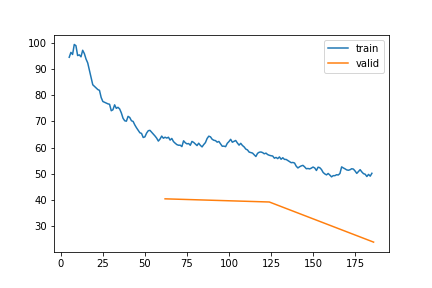
Additional training
spec_learn2 = {}
for var in tqdm(['TA', 'SW_IN', 'WS', 'PA', 'VPD', 'TS', 'SWC']):
display(HTML(f"<h4> {var} | Gap len 12-336 </h4> | Training 2"))
spec_learn2[var], _ = train_or_load(spec_learn[var].model.copy(), spec_dls[var], 2, 1e-3, base / f"{var}_specialized_gap_12-336_v2.pickle")
plt.show()
TA | Gap len 12-336
| Training 2| epoch | train_loss | valid_loss | rmse_gap | time | |
|---|---|---|---|---|---|
| 0 | 0 | -82.582890 | -78.921598 | 0.137891 | 21:39 |
| 1 | 1 | -86.119136 | -89.580120 | 0.128288 | 21:18 |

SW_IN | Gap len 12-336
| Training 2| epoch | train_loss | valid_loss | rmse_gap | time | |
|---|---|---|---|---|---|
| 0 | 0 | 52.668345 | 46.674095 | 0.288313 | 21:53 |
| 1 | 1 | 51.089022 | 44.378815 | 0.283374 | 22:28 |

WS | Gap len 12-336
| Training 2| epoch | train_loss | valid_loss | rmse_gap | time | |
|---|---|---|---|---|---|
| 0 | 0 | 164.019476 | 232.919238 | 0.710805 | 22:37 |
| 1 | 1 | 164.185435 | 225.276840 | 0.707446 | 22:50 |
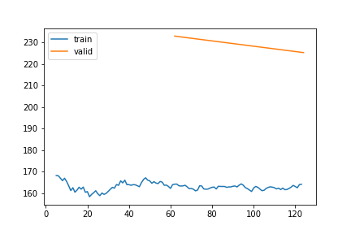
PA | Gap len 12-336
| Training 2| epoch | train_loss | valid_loss | rmse_gap | time | |
|---|---|---|---|---|---|
| 0 | 0 | -147.345027 | -136.658365 | 0.103830 | 22:42 |
| 1 | 1 | -157.427610 | -119.642745 | 0.108054 | 22:36 |

VPD | Gap len 12-336
| Training 2| epoch | train_loss | valid_loss | rmse_gap | time | |
|---|---|---|---|---|---|
| 0 | 0 | 46.489590 | 30.196986 | 0.249948 | 22:27 |
| 1 | 1 | 45.226931 | 46.153450 | 0.273411 | 21:01 |
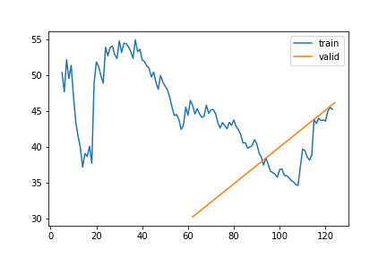
TS | Gap len 12-336
| Training 2| epoch | train_loss | valid_loss | rmse_gap | time | |
|---|---|---|---|---|---|
| 0 | 0 | 39.863970 | 17.692497 | 0.221164 | 20:40 |
| 1 | 1 | 31.964869 | 3.826767 | 0.209781 | 20:34 |
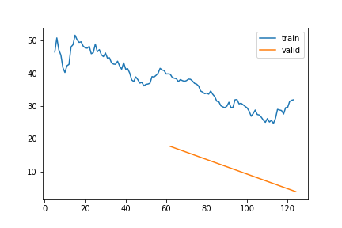
SWC | Gap len 12-336
| Training 2| epoch | train_loss | valid_loss | rmse_gap | time | |
|---|---|---|---|---|---|
| 0 | 0 | 114.122129 | 96.942318 | 0.352660 | 20:44 |
| 1 | 1 | 67.486398 | 34.946166 | 0.239454 | 20:39 |

PA and VPD are overfitting so repeat training 2 with only one batch
spec_learn3 = {}
for var in tqdm(['PA', 'VPD']):
display(HTML(f"<h4> {var} | Gap len 12-336 | Training 3 </h4>"))
spec_learn3[var], _ = train_or_load(spec_learn[var].model.copy(), spec_dls[var], 1, 1e-3, base / f"{var}_specialized_gap_12-336_v3.pickle")
plt.show()
PA | Gap len 12-336 | Training 3
| epoch | train_loss | valid_loss | rmse_gap | time | |
|---|---|---|---|---|---|
| 0 | 0 | -135.310833 | -106.027287 | 0.120461 | 24:33 |
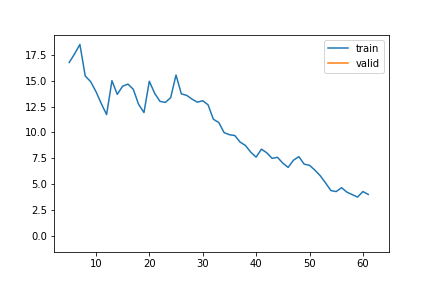
VPD | Gap len 12-336 | Training 3
| epoch | train_loss | valid_loss | rmse_gap | time | |
|---|---|---|---|---|---|
| 0 | 0 | 41.435748 | 32.315761 | 0.254877 | 24:13 |
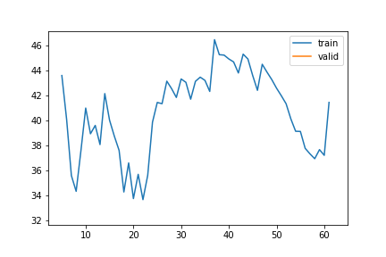
spec_learn3 = {}
for var in tqdm(['TS']):
display(HTML(f"<h4> {var} | Gap len 12-336 | Training 1+2+3 </h4>"))
spec_learn3[var], _ = train_or_load(spec_learn2[var].model.copy(), spec_dls[var], 1, 1e-5, base / f"{var}_specialized_gap_12-336_v3")
plt.show()
TS | Gap len 12-336 | Training 1+2+3
| epoch | train_loss | valid_loss | rmse_gap | time | |
|---|---|---|---|---|---|
| 0 | 0 | 16.858002 | -7.042792 | 0.189336 | 23:31 |

for var in tqdm(['SWC']):
display(HTML(f"<h4> {var} | Gap len 12-336 | Training 1+2+3 </h4>"))
spec_learn3[var], _ = train_or_load(spec_learn2[var].model.copy(), spec_dls[var], 1, 1e-5, base / f"{var}_specialized_gap_12-336_v3")
plt.show()
SWC | Gap len 12-336 | Training 1+2+3
| epoch | train_loss | valid_loss | rmse_gap | time | |
|---|---|---|---|---|---|
| 0 | 0 | 3.990423 | -0.629562 | 0.185285 | 24:57 |

for var in tqdm(['SWC']):
display(HTML(f"<h4> {var} | Gap len 12-336 | Training 1+2+3 </h4>"))
spec_learn3[var], _ = train_or_load(spec_learn2[var].model.copy(), spec_dls[var], 2, 1e-3, base / f"{var}_specialized_gap_12-336_v3_2")
plt.show()
SWC | Gap len 12-336 | Training 1+2+3
| epoch | train_loss | valid_loss | rmse_gap | time | |
|---|---|---|---|---|---|
| 0 | 0 | -1.621724 | -38.955631 | 0.146205 | 23:45 |
| 1 | 1 | -35.639923 | -57.006918 | 0.130909 | 22:09 |
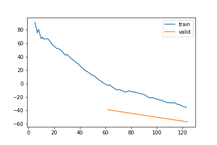
the training loss is getting worse … so tring with smaller learning rate
for var in tqdm(['SWC']):
display(HTML(f"<h4> {var} | Gap len 12-336 | Training 1+2+3 </h4>"))
spec_learn3[var], _ = train_or_load(spec_learn3[var].model.copy(), spec_dls[var], 1, 1e-5, base / f"{var}_specialized_gap_12-336_v3_3")
plt.show()
SWC | Gap len 12-336 | Training 1+2+3
| epoch | train_loss | valid_loss | rmse_gap | time | |
|---|---|---|---|---|---|
| 0 | 0 | -75.585425 | -79.693433 | 0.113264 | 25:09 |

for var in tqdm(['SWC']):
display(HTML(f"<h4> {var} | Gap len 12-336 | Training 1+2+3+4 </h4>"))
spec_learn3[var], _ = train_or_load(spec_learn3[var].model.copy(), spec_dls[var], 1, 1e-5, base / f"{var}_specialized_gap_12-336_v3_4")
plt.show()
SWC | Gap len 12-336 | Training 1+2+3
| epoch | train_loss | valid_loss | rmse_gap | time |
|---|---|---|---|---|
| 0 | -79.656960 | -81.566511 | 0.113204 | 25:25 |

spec_learn4 = {}
for var in tqdm(['SWC']):
display(HTML(f"<h4> {var} | Gap len 12-336 | Training 1+2+3+4 </h4>"))
spec_learn3[var], _ = train_or_load(spec_learn3[var].model.copy(), spec_dls[var], 1, 1e-5, base / f"{var}_specialized_gap_12-336_v4")
plt.show()
SWC | Gap len 12-336 | Training 1+2+3+4
| epoch | train_loss | valid_loss | rmse_gap | time | |
|---|---|---|---|---|---|
| 0 | 0 | -0.957575 | -7.084297 | 0.173571 | 24:35 |
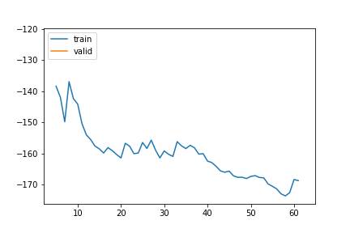
for var in tqdm(['WS']):
display(HTML(f"<h4> {var} | Gap len 12-336 | Training 1+2+3 </h4>"))
spec_learn3[var], _ = train_or_load(spec_learn2[var].model.copy(), spec_dls[var], 1, 1e-5, base / f"{var}_specialized_gap_12-336_v3")
plt.show()
WS | Gap len 12-336 | Training 1+2+3
| epoch | train_loss | valid_loss | rmse_gap | time | |
|---|---|---|---|---|---|
| 0 | 0 | 158.930217 | 224.42966 | 0.701698 | 24:04 |

this is overfitting PA
for var in tqdm(['PA']):
display(HTML(f"<h4> {var} | Gap len 12-336 | Training 1++3 </h4>"))
spec_learn3[var], _ = train_or_load(spec_learn[var].model.copy(), spec_dls[var], 1, 1e-4, base / f"{var}_specialized_gap_12-336_v3")
plt.show()
PA | Gap len 12-336 | Training 1++3
| epoch | train_loss | valid_loss | rmse_gap | time | |
|---|---|---|---|---|---|
| 0 | 0 | -168.729458 | -122.183789 | 0.10763 | 23:40 |

spec_learn4 = {}
for var in tqdm(['PA']):
display(HTML(f"<h4> {var} | Gap len 12-336 | Training 1+3+4 </h4>"))
spec_learn3[var], _ = train_or_load(spec_learn3[var].model.copy(), spec_dls[var], 1, 1e-4, base / f"{var}_specialized_gap_12-336_v4")
plt.show()
PA | Gap len 12-336 | Training 1+3+4
| epoch | train_loss | valid_loss | rmse_gap | time | |
|---|---|---|---|---|---|
| 0 | 0 | -169.911168 | -117.59576 | 0.109397 | 21:33 |

Finetune gap length
gap_models = {}
gap_dls = {}
gap_learn = {}
gap_items = {}
for gap_len in tqdm([6,24,48,7*48]):
print(f"Gap len: {gap_len}")
gap_dls[gap_len] = imp_dataloader(hai, hai_era, var_sel = gen_var_sel(list(hai.columns), n_var=1), block_len=gap_len+100, gap_len=gap_len, bs=20, control_lags=[1], n_rep=1, shifts=gen_shifts(50)).cpu()
gap_models[gap_len] = learn_A1v.model.copy()
display(metric_valid(learn_A1v, dls=gap_dls[gap_len].valid))
gap_learn[gap_len], gap_items[gap_len] = train_or_load(gap_models[gap_len], gap_dls[gap_len], 3, 2e-5, base / f"gap_1_any_var_gap_len_{gap_len}_v1.pickle")
plt.show()
Fine tune TA for diff gap lens
as an experiment TA for a gap of 24 fine tuned
dls_TA24 = imp_dataloader(
df = hai,
control = hai_era,
var_sel = 'TA',
block_len=100+24,
gap_len=24,
bs=20,
control_lags=[1],
shifts=gen_shifts(50),
n_rep=1).cpu()model_TA24 = learn_A1v.model.copy()metric_valid(learn_A1v, dls= dls_TA24.valid)| loss | rmse | |
|---|---|---|
| mean | -2.338763 | 0.184055 |
| std | 2.551372 | 0.034550 |
learn_TA24, items_TA24 = train_or_load(model_TA24, dls_TA24, 1, 1e-4, base / "TA_gap_24_v1")| epoch | train_loss | valid_loss | rmse_gap | time | |
|---|---|---|---|---|---|
| 0 | 0 | -2.51402 | -3.892453 | 0.174431 | 02:41 |
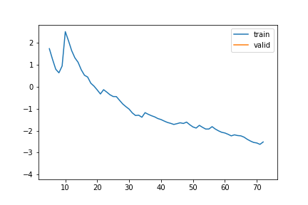
learn_TA24, items_TA24 = train_or_load(model_TA24, dls_TA24, 1, 1e-4, base / "TA_gap_24_v1_2")| epoch | train_loss | valid_loss | rmse_gap | time | |
|---|---|---|---|---|---|
| 0 | 0 | -4.713286 | -5.854372 | 0.161322 | 02:37 |

learn_TA24, items_TA24 = train_or_load(model_TA24, dls_TA24, 1, 1e-4, base / "TA_gap_24_v1_3")| epoch | train_loss | valid_loss | rmse_gap | time | |
|---|---|---|---|---|---|
| 0 | 0 | -6.744339 | -7.335044 | 0.152876 | 02:39 |

learn_TA24, items_TA24 = train_or_load(model_TA24, dls_TA24, 1, 5e-5, base / "TA_gap_24_v1_4")| epoch | train_loss | valid_loss | rmse_gap | time | |
|---|---|---|---|---|---|
| 0 | 0 | -7.932901 | -8.451432 | 0.144813 | 02:42 |

learn_TA24, items_TA24 = train_or_load(model_TA24, dls_TA24, 3, 3e-5, base / "TA_gap_24_v1_4")| epoch | train_loss | valid_loss | rmse_gap | time | |
|---|---|---|---|---|---|
| 0 | 0 | -7.932901 | -8.451432 | 0.144813 | 02:42 |

metric_valid(learn_TA24, dls= dls_TA24.valid)| loss | rmse | |
|---|---|---|
| mean | -9.049459 | 0.140859 |
| std | 2.104846 | 0.023429 |
dls_TA48 = imp_dataloader(
df = hai,
control = hai_era,
var_sel = 'TA',
block_len=100+48,
gap_len=48,
bs=20,
control_lags=[1],
shifts=gen_shifts(50),
n_rep=1).cpu()model_TA48 = learn_TA24.model.copy()metric_valid(learn_TA24, dls= dls_TA48.valid)| loss | rmse | |
|---|---|---|
| mean | -11.247340 | 0.170793 |
| std | 8.504741 | 0.035950 |
learn_TA48, items_TA48 = train_or_load(model_TA24, dls_TA24, 2, 2e-4, base / "TA_gap_48_v1")| epoch | train_loss | valid_loss | rmse_gap | time | |
|---|---|---|---|---|---|
| 0 | 0 | -11.938200 | -13.136611 | 0.119232 | 02:38 |
| 1 | 1 | -13.676607 | -14.978353 | 0.111058 | 02:38 |
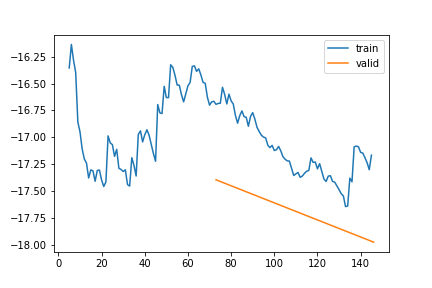
learn_TA48, items_TA48 = train_or_load(model_TA24, dls_TA24, 2, 1e-4, base / "TA_gap_48_v1_2")| epoch | train_loss | valid_loss | rmse_gap | time | |
|---|---|---|---|---|---|
| 0 | 0 | -15.563658 | -15.840925 | 0.107003 | 02:44 |
| 1 | 1 | -15.958545 | -16.626610 | 0.103149 | 02:54 |
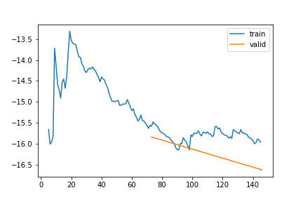
learn_TA48, items_TA48 = train_or_load(model_TA24, dls_TA24, 2, 1e-4, base / "TA_gap_48_v1_3")| epoch | train_loss | valid_loss | rmse_gap | time | |
|---|---|---|---|---|---|
| 0 | 0 | -16.665217 | -17.394887 | 0.099992 | 02:40 |
| 1 | 1 | -17.165897 | -17.974066 | 0.097933 | 02:43 |

learn_TA48, items_TA48 = train_or_load(model_TA24, dls_TA24, 2, 1e-4, base / "TA_gap_48_v1_4")| epoch | train_loss | valid_loss | rmse_gap | time | |
|---|---|---|---|---|---|
| 0 | 0 | -18.111798 | -18.427618 | 0.096457 | 02:49 |
| 1 | 1 | -18.591682 | -19.413278 | 0.092474 | 02:52 |

model_TA24_v2 = KalmanFilterSR.init_local_slope_pca(
n_dim_obs= len(hai.columns),
n_dim_state=len(hai.columns),
n_dim_contr = len(hai_era.columns),
df_pca = hai,
pred_only_gap=True)learn_TA24_v2, items_TA24_v2 = train_or_load(model_TA24, dls_TA24, 3, 1e-3, base / "TA_gap_24_v2_1")TA_models = {}
TA_dls = {}
TA_learn = {}
TA_items = {}
for gap_len in tqdm([6,24,48,7*48]):
display(HTML(f"<h4> TA | Gap len: {gap_len} </h4>"))
TA_dls[gap_len] = imp_dataloader(hai, hai_era, var_sel = 'TA', block_len=gap_len+100, gap_len=gap_len, bs=20, control_lags=[1], n_rep=2, shifts=gen_shifts(50)).cpu()
TA_models[gap_len] = learn_A1v.model.copy()
display(metric_valid(learn_A1v, dls=TA_dls[gap_len].valid))
TA_learn[gap_len], TA_items[gap_len] = train_or_load(TA_models[gap_len], TA_dls[gap_len], 4, 1e-4, base / f"TA_gap_len_{gap_len}_v1.pickle")
plt.show()
TA | Gap len: 6
| loss | rmse | |
|---|---|---|
| mean | -2.093156 | 0.102643 |
| std | 0.403933 | 0.025537 |
| epoch | train_loss | valid_loss | rmse_gap | time |
|---|---|---|---|---|
| 0 | -3.623101 | -4.139968 | 0.074969 | 03:57 |
| 1 | -5.193550 | -5.537112 | 0.060948 | 04:14 |
| 2 | -6.309246 | -6.533323 | 0.052087 | 04:33 |
| 3 | -7.058736 | -7.211129 | 0.046813 | 04:22 |

TA | Gap len: 24
| loss | rmse | |
|---|---|---|
| mean | -0.660455 | 0.200111 |
| std | 2.088128 | 0.031036 |
| epoch | train_loss | valid_loss | rmse_gap | time |
|---|---|---|---|---|
| 0 | -4.815664 | -5.862635 | 0.162549 | 05:23 |
| 1 | -8.257145 | -9.265403 | 0.141516 | 05:27 |
| 2 | -10.721531 | -11.764655 | 0.126987 | 05:17 |
| 3 | -13.121913 | -13.537241 | 0.119559 | 05:31 |
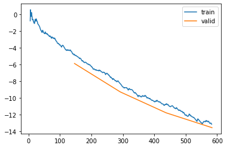
TA | Gap len: 48
| loss | rmse | |
|---|---|---|
| mean | 2.231489 | 0.227216 |
| std | 4.624743 | 0.032391 |
| epoch | train_loss | valid_loss | rmse_gap | time |
|---|---|---|---|---|
| 0 | -5.077721 | -6.730453 | 0.189337 | 06:57 |
| 1 | -10.696784 | -12.647214 | 0.166578 | 06:37 |
| 2 | -15.724886 | -16.361526 | 0.153221 | 06:56 |
| 3 | -18.714646 | -19.920346 | 0.142614 | 06:41 |

TA | Gap len: 336
| loss | rmse | |
|---|---|---|
| mean | 30.665105 | 0.248255 |
| std | 18.911530 | 0.021534 |
| epoch | train_loss | valid_loss | rmse_gap | time |
|---|---|---|---|---|
| 0 | 18.701340 | -1.243045 | 0.226205 | 17:41 |
| 1 | -0.477330 | -23.318493 | 0.212453 | 17:30 |
| 2 | -19.797870 | -42.075069 | 0.200830 | 47:23 |
| 3 | -36.470670 | -55.291288 | 0.192844 | 18:24 |
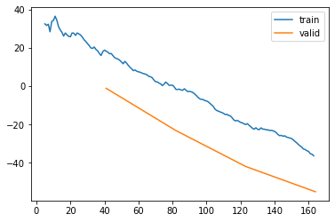
TA multiple gap len
dls_TA = imp_dataloader(
df = hai,
control = hai_era,
var_sel = 'TA',
block_len=70+336,
gap_len=gen_gap_len(12,336),
bs=20,
control_lags=[1],
shifts=gen_shifts(50),
n_rep=3).cpu()model_TA = learn_A1v.model.copy()metric_valid(learn_A1v, dls= dls_TA.valid)| loss | rmse | |
|---|---|---|
| mean | 18.120834 | 0.240742 |
| std | 19.321141 | 0.032218 |
learn_TA, items_TA = train_or_load(model_TA, dls_TA, 2, 5e-4, base / "TA_gap_12-336_v1,")| epoch | train_loss | valid_loss | rmse_gap | time | |
|---|---|---|---|---|---|
| 0 | 0 | -26.097331 | -37.440739 | 0.175528 | 25:36 |
| 1 | 1 | -50.443927 | -66.472712 | 0.149401 | 26:02 |
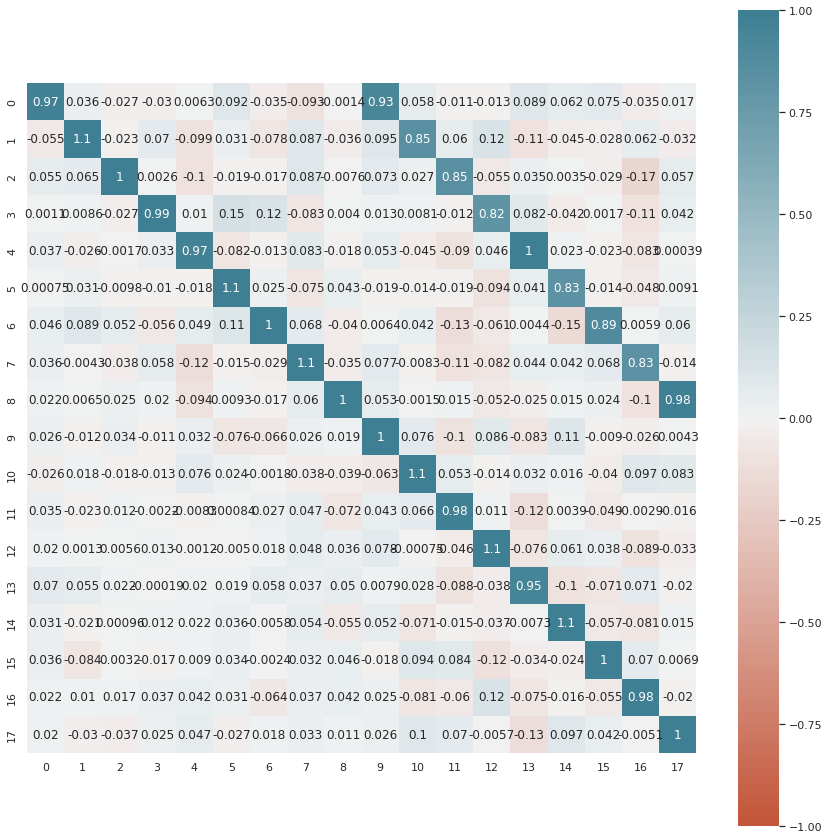
learn_TA, items_TA = train_or_load(learn_TA.model, dls_TA, 2, 5e-4, base / "TA_gap_12-336_v2")| epoch | train_loss | valid_loss | rmse_gap | time |
|---|---|---|---|---|
| 0 | -70.902275 | -72.341130 | 0.137253 | 24:20 |
| 1 | -78.379055 | -76.962878 | 0.132967 | 23:55 |
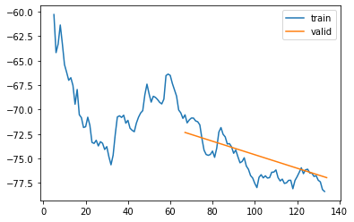
learn_TA, items_TA = train_or_load(learn_TA.model, dls_TA, 2, 5e-4, base / "TA_gap_12-336_v3")| epoch | train_loss | valid_loss | rmse_gap | time |
|---|---|---|---|---|
| 0 | -85.106441 | -82.588917 | 0.128094 | 24:21 |
| 1 | -86.267741 | -83.305525 | 0.129777 | 23:29 |

Detailed metrics
def metrics_valid_gap_lens(learn, var, gaps = [6,12,24,48,7*48]):
for gap_len in tqdm(gaps):
dls = imp_dataloader(hai, hai_era, var_sel = var, block_len=gap_len+100, gap_len=gap_len, bs=20, control_lags=[1], n_rep=1, shifts=gen_shifts(50)).cpu()
display(HTML(f"<strong> Metrics | gap len: {gap_len} | Var: {var} </strong>"))
display(metric_valid(learn, dls=dls.valid))/home/simone/anaconda3/envs/data-science/lib/python3.10/site-packages/fastai/callback/core.py:69: UserWarning: You are shadowing an attribute (__class__) that exists in the learner. Use `self.learn.__class__` to avoid this
warn(f"You are shadowing an attribute ({name}) that exists in the learner. Use `self.learn.{name}` to avoid this")metrics_valid_gap_lens(learn_A1v, 'TA')
Metrics | gap len: 6 | Var: TA
| loss | rmse | |
|---|---|---|
| mean | -2.649933 | 0.095968 |
| std | 0.338268 | 0.018444 |
Metrics | gap len: 12 | Var: TA
| loss | rmse | |
|---|---|---|
| mean | -3.243049 | 0.134065 |
| std | 0.710149 | 0.021311 |
Metrics | gap len: 24 | Var: TA
| loss | rmse | |
|---|---|---|
| mean | -2.125709 | 0.188222 |
| std | 2.047966 | 0.027886 |
Metrics | gap len: 48 | Var: TA
| loss | rmse | |
|---|---|---|
| mean | 0.638268 | 0.217725 |
| std | 6.192707 | 0.031585 |
Metrics | gap len: 336 | Var: TA
| loss | rmse | |
|---|---|---|
| mean | 21.469734 | 0.242877 |
| std | 9.829365 | 0.010609 |
metrics_valid_gap_lens(learn_A1v_nc, 'TA')
Metrics | gap len: 6 | Var: TA
| loss | rmse | |
|---|---|---|
| mean | -3.430541 | 0.055689 |
| std | 0.097171 | 0.009796 |
Metrics | gap len: 12 | Var: TA
| loss | rmse | |
|---|---|---|
| mean | -3.790838 | 0.113533 |
| std | 0.833381 | 0.030206 |
Metrics | gap len: 24 | Var: TA
| loss | rmse | |
|---|---|---|
| mean | -0.992221 | 0.187918 |
| std | 4.834171 | 0.068321 |
Metrics | gap len: 48 | Var: TA
| loss | rmse | |
|---|---|---|
| mean | 5.597832 | 0.235436 |
| std | 12.132120 | 0.075510 |
Metrics | gap len: 336 | Var: TA
| loss | rmse | |
|---|---|---|
| mean | 96.691128 | 0.293088 |
| std | 98.837141 | 0.085536 |
metrics_valid_gap_lens(spec_learn['TA'], 'TA')/home/simone/anaconda3/envs/data-science/lib/python3.10/site-packages/fastai/callback/core.py:69: UserWarning: You are shadowing an attribute (__class__) that exists in the learner. Use `self.learn.__class__` to avoid this
warn(f"You are shadowing an attribute ({name}) that exists in the learner. Use `self.learn.{name}` to avoid this")
Metrics | gap len: 6 | Var: TA
| loss | rmse | |
|---|---|---|
| mean | -6.332682 | 0.049233 |
| std | 0.226535 | 0.007010 |
Metrics | gap len: 12 | Var: TA
| loss | rmse | |
|---|---|---|
| mean | -10.478126 | 0.072882 |
| std | 0.762210 | 0.010581 |
Metrics | gap len: 24 | Var: TA
| loss | rmse | |
|---|---|---|
| mean | -15.977039 | 0.103628 |
| std | 4.186457 | 0.024085 |
Metrics | gap len: 48 | Var: TA
| loss | rmse | |
|---|---|---|
| mean | -25.748188 | 0.125292 |
| std | 11.229092 | 0.031731 |
Metrics | gap len: 336 | Var: TA
| loss | rmse | |
|---|---|---|
| mean | -136.930894 | 0.152361 |
| std | 61.110281 | 0.026692 |
metrics_valid_gap_lens(spec_learn["SWC"], 'SWC', gaps=[6,12,24,30])
Metrics | gap len: 6 | Var: SWC
| loss | rmse | |
|---|---|---|
| mean | -4.637960 | 0.051318 |
| std | 0.299619 | 0.012608 |
Metrics | gap len: 12 | Var: SWC
| loss | rmse | |
|---|---|---|
| mean | -6.503471 | 0.078820 |
| std | 0.751687 | 0.020815 |
Metrics | gap len: 24 | Var: SWC
| loss | rmse | |
|---|---|---|
| mean | -6.256985 | 0.114699 |
| std | 1.533914 | 0.030592 |
Metrics | gap len: 30 | Var: SWC
| loss | rmse | |
|---|---|---|
| mean | -3.957636 | 0.144434 |
| std | 2.228843 | 0.032844 |
metrics_valid_gap_lens(spec_learn3["SWC"], 'SWC', gaps=[6,12,24,30])
Metrics | gap len: 6 | Var: SWC
| loss | rmse | |
|---|---|---|
| mean | -7.409364 | 0.040791 |
| std | 0.602997 | 0.008078 |
Metrics | gap len: 12 | Var: SWC
| loss | rmse | |
|---|---|---|
| mean | -14.166100 | 0.049997 |
| std | 1.298232 | 0.009736 |
Metrics | gap len: 24 | Var: SWC
| loss | rmse | |
|---|---|---|
| mean | -26.025482 | 0.058914 |
| std | 2.035570 | 0.009232 |
Metrics | gap len: 30 | Var: SWC
| loss | rmse | |
|---|---|---|
| mean | -31.526816 | 0.064446 |
| std | 2.601954 | 0.008842 |
metrics_valid_gap_lens(learn_Aa, 'SWC', gaps=[6,12,24,30])
Metrics | gap len: 6 | Var: SWC
| loss | rmse | |
|---|---|---|
| mean | -10.621700 | 0.020779 |
| std | 1.637564 | 0.009605 |
Metrics | gap len: 12 | Var: SWC
| loss | rmse | |
|---|---|---|
| mean | -21.012826 | 0.024119 |
| std | 1.456359 | 0.007166 |
Metrics | gap len: 24 | Var: SWC
| loss | rmse | |
|---|---|---|
| mean | -36.451721 | 0.034461 |
| std | 4.163576 | 0.011231 |
Metrics | gap len: 30 | Var: SWC
| loss | rmse | |
|---|---|---|
| mean | -43.786023 | 0.038519 |
| std | 5.267340 | 0.010467 |
this is pretty weird the model with gaps in all variables is performing better that the one with only partial gaps ….
let’s so some finetuning
SWC | Gap len 30
dls_SWC_30 = imp_dataloader(
df = hai,
control = hai_era,
var_sel = 'SWC',
block_len=120,
gap_len=30,
bs=20,
control_lags=[1],
shifts=gen_shifts(50),
n_rep=1
).cpu()model_SWC_30 = spec_learn['SWC'].copy()if show_metrics: metric_valid(model_SWC_30, dls=model_SWC_30.valid)learn_SWC_30, items_SWC_30 = train_or_load(model_SWC_30, dls_SWC_30, 2, 3e-4, base / "SWC_gap_30_v1")| epoch | train_loss | valid_loss | rmse_gap | time |
|---|---|---|---|---|
| 0 | -10.998339 | -15.672505 | 0.099315 | 02:51 |
| 1 | -17.301334 | -22.166437 | 0.085715 | 02:51 |
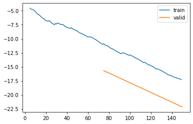
learn_SWC_30, items_SWC_30 = train_or_load(model_SWC_30, dls_SWC_30, 2, 1e-3, base / "SWC_gap_30_v2")| epoch | train_loss | valid_loss | rmse_gap | time |
|---|---|---|---|---|
| 0 | -27.642977 | -34.401863 | 0.056773 | 02:56 |
| 1 | -33.920003 | -38.631508 | 0.050980 | 02:57 |

learn_SWC_30, items_SWC_30 = train_or_load(model_SWC_30, dls_SWC_30, 2, 1e-3, base / "SWC_gap_30_v3")| epoch | train_loss | valid_loss | rmse_gap | time |
|---|---|---|---|---|
| 0 | -38.766184 | -42.612718 | 0.041158 | 02:55 |
| 1 | -39.593180 | -42.984206 | 0.041554 | 02:52 |

learn_SWC_30, items_SWC_30 = train_or_load(model_SWC_30, dls_SWC_30, 2, 1e-3, base / "SWC_gap_30_v3")| epoch | train_loss | valid_loss | rmse_gap | time |
|---|---|---|---|---|
| 0 | -38.766184 | -42.612718 | 0.041158 | 02:55 |
| 1 | -39.593180 | -42.984206 | 0.041554 | 02:52 |

show_results(learn_SWC_30, hide_no_gap=True, items=items_SWC_30)[MeteoImpItem(i=1674, shift=30, var_sel=['SWC'], gap_len=30), MeteoImpItem(i=1693, shift=46, var_sel=['SWC'], gap_len=30), MeteoImpItem(i=1570, shift=-83, var_sel=['SWC'], gap_len=30), MeteoImpItem(i=1682, shift=54, var_sel=['SWC'], gap_len=30)]show_results(learn_Aa, hide_no_gap=True, items=items_SWC_30)[MeteoImpItem(i=1674, shift=30, var_sel=['SWC'], gap_len=30), MeteoImpItem(i=1693, shift=46, var_sel=['SWC'], gap_len=30), MeteoImpItem(i=1570, shift=-83, var_sel=['SWC'], gap_len=30), MeteoImpItem(i=1682, shift=54, var_sel=['SWC'], gap_len=30)]show_results(learn_A1v, hide_no_gap=True, items=items_SWC_30, dls=dls_SWC_30)[MeteoImpItem(i=1674, shift=30, var_sel=['SWC'], gap_len=30), MeteoImpItem(i=1693, shift=46, var_sel=['SWC'], gap_len=30), MeteoImpItem(i=1570, shift=-83, var_sel=['SWC'], gap_len=30), MeteoImpItem(i=1682, shift=54, var_sel=['SWC'], gap_len=30)]show_results(spec_learn['SWC'], hide_no_gap=True, items=spec_items['SWC'], dls=spec_dls['SWC'])[MeteoImpItem(i=510, shift=10, var_sel=['SWC'], gap_len=243), MeteoImpItem(i=504, shift=0, var_sel=['SWC'], gap_len=109), MeteoImpItem(i=494, shift=-94, var_sel=['SWC'], gap_len=116), MeteoImpItem(i=481, shift=-17, var_sel=['SWC'], gap_len=148)]show_results(learn_SWC_30)[MeteoImpItem(i=1892, shift=-50, var_sel=['SWC'], gap_len=30), MeteoImpItem(i=1667, shift=68, var_sel=['SWC'], gap_len=30), MeteoImpItem(i=1761, shift=41, var_sel=['SWC'], gap_len=30)]